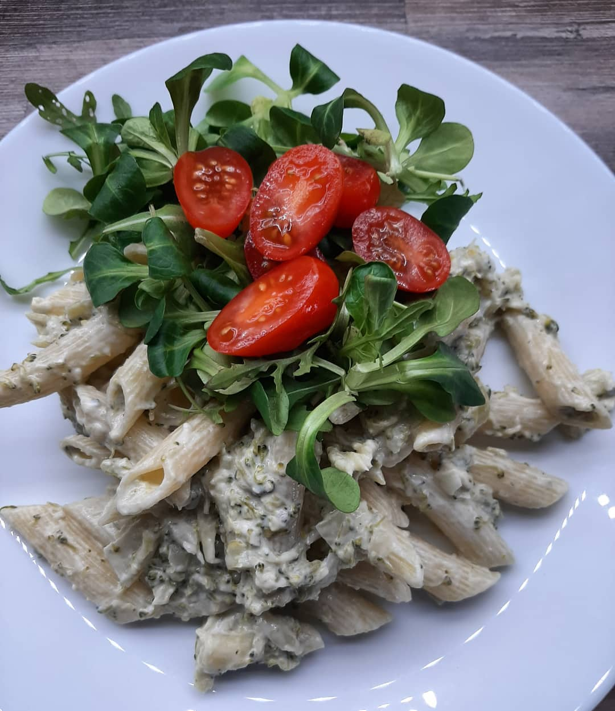

Brokolicová omáčka podľa @fit.mama.ondo_ — Normy Jedál
Těstoviny s brokolicovou omáčkou
🥦1 brokolice
🥦1 větší cibule
🥦česnek
🥦smetana na vaření
🥦niva
🥦sůl, pepř
🥦Ghíčko
🥦Gervais s proteinem
🥦🥦🥦Brokolici si uvař v osolené vodě, až bude měkká, tak ji rozšťouchej. Na pánev si dej Ghíčko , potom cibulku, brokolici a zalij smetanou, přidej nastrouhanou nivu, gervais s proteinem, sůl, pepř a nakonec prolisuj česnek.
#megarychlymegadobry #obed #nedelniobed #brokolice #brokolicovaomacka #dobrota #dobrouchut #obeddoma☀️ #rychlovka #uvareno